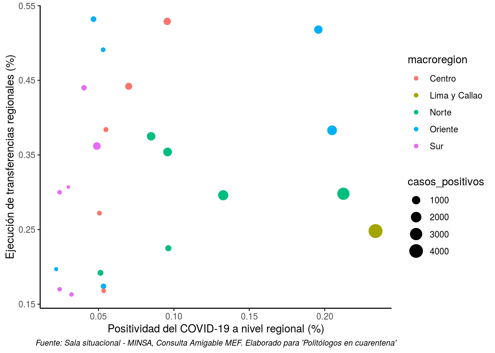

3.1. Gobiernos Regionales
3.1.1. Datos sobre casos y muestras realizadas
Datos actualizados al 04/05/2020. Fuente: Sala Situacional-MINSA
3.1.2. Transferencias a Gobiernos Regionales y su ejecución
Datos actualizados al 03/05/2020. Fuente: Consulta amigable - MEF
3.1.3. Mapa de situación de los Gobiernos Regionales
Para conocer la situación a nivel regional: Mapa interactivo de Gobiernos Regionales
Datos actualizados al 03/05/2020. Mapa elaborado por Manuel Ponte.
3.1.4. Presencia de casos positivos y nivel de gasto de los Gobiernos Regionales
